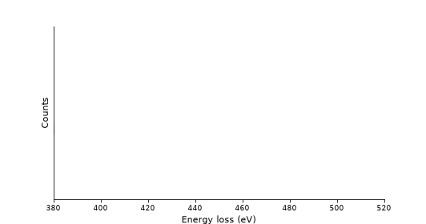

Spectra
EELS
Bonding, oxidation state and thickness.
Steps
Open Spectrum...Open a spectrum (.dm3, .dm4, .msa, .csv) or a spectrum image.Subtract BackgroundPick a window before the edge: a power law A·E^-r is fitted and removed.Fitthe edge with your reference spectra (TiC, TiO2, Ti3C2...).C K π*/σ*gives the sp2 fraction; Plasmon gives the plasmon energy.Low-Loss MapsThickness: t/λ = ln(I total / I zero-loss), for one spectrum or as a map.
How it works

Worked example
I total / I zero-loss = 1.65 gives t/λ = ln 1.65 = 0.50. With λ ≈ 110 nm (Malis), t ≈ 55 nm.